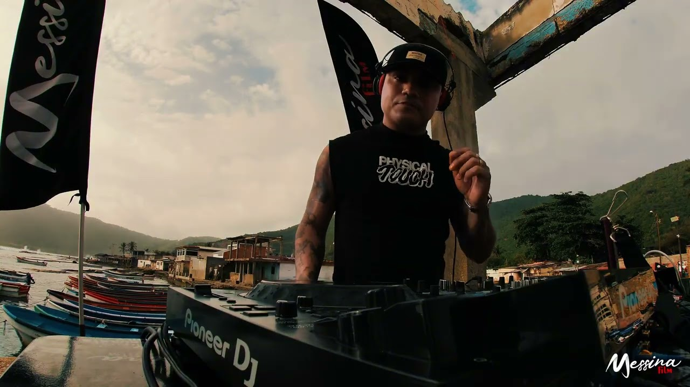
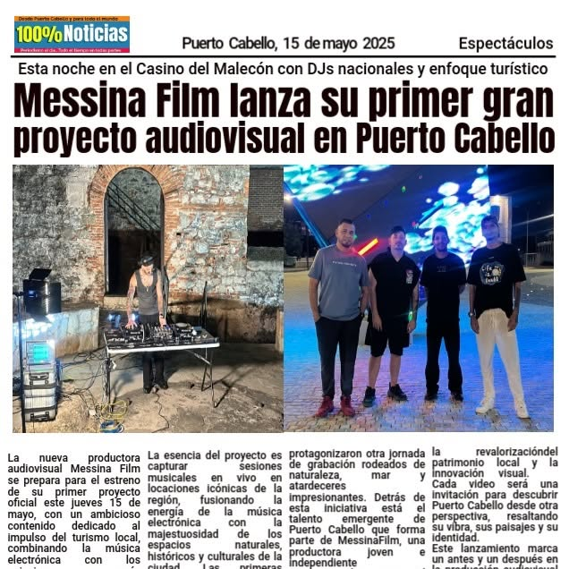
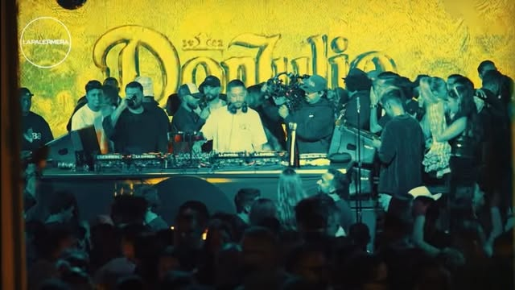
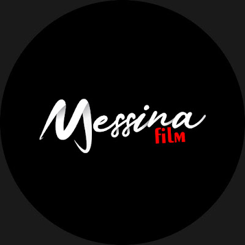

Messina Film es una productora audiovisual joven e independiente de Puerto Cabello, Venezuela. Graba live sets de DJ en locaciones icónicas de la ciudad, como el Fortín Solano, el Malecón y sus playas, uniendo música electrónica, paisaje y patrimonio en un mismo plano.

Electronic Press Kit · 2026
Producción audiovisual de los DJ. Grabamos live sets de música electrónica en las locaciones más icónicas de Puerto Cabello, Venezuela, y los mostramos al mundo desde nuestro canal.
- Base
- Puerto Cabello, Carabobo, VE
- Lanzamiento
- 15 de mayo de 2025
- Formato
- Live sets en locación
- Sets publicados
- 12
- Vistas en YouTube
- 190K+
- Comunidad
- 1.4K YouTube · 2K Instagram
- Aliado
- Borburata Family
Biografía
Quiénes somos
Dos versiones listas para notas de prensa, flyers, propuestas a marcas y descripciones de eventos.
Messina Film nació en Puerto Cabello como una productora audiovisual joven e independiente con una idea clara: grabar sesiones de música electrónica en vivo en los lugares que cuentan la historia de la ciudad. El proyecto se estrenó el 15 de mayo de 2025 en el Casino del Malecón, con DJs nacionales y un enfoque turístico.
Desde entonces ha publicado doce live sets en locaciones como el Fortín Solano, el Malecón, el Mirador de Patanemo, San Millán, el Skatepark y las playas Gañango, Waikiki y Sonrisa. Cada producción combina cámaras, drone y estabilizador con audio directo de la consola, y suma más de 190 mil reproducciones en YouTube.
Cada video es una invitación a descubrir Puerto Cabello desde otra perspectiva, resaltando su vibra, sus paisajes y su identidad, y a dar visibilidad al talento electrónico venezolano.
Sets destacados
Los más vistos
Los tres sets con más reproducciones del canal. El catálogo completo está en el sitio y en YouTube.
Artistas
DJs que han tocado con nosotros
Cada nombre abre su set en YouTube.

Prensa
Messina Film lanza su primer gran proyecto audiovisual en Puerto Cabello100% Noticias · Espectáculos · 15 de mayo de 2025
Cobertura del estreno en el Casino del Malecón. La nota describe el proyecto como sesiones de música electrónica en vivo en espacios naturales, históricos y culturales, con un impulso al turismo local.

Equipo
Detrás de cámara
- Dirección y producciónConcepto de cada set, locación y coordinación con el artista. [Nombre]
- Cámara y droneOperación de cámaras, estabilizador y drones DJI. [Nombre]
- Edición y colorMontaje, color y sincronía de audio. [Nombre]
Ficha técnica
Qué entregamos
Referencia para artistas, promotores y marcas. Cada proyecto se ajusta a donde se va a publicar.
Set completoVideo horizontal de 40 a 75 minutos con audio directo de la consola, listo para YouTube.
Clips verticalesCortes de los mejores momentos en formato 9:16 para Reels, TikTok y Shorts.
Tomas aéreasAperturas y planos de la locación con drone, también disponibles por separado.
Equipo de rodaje
Drone
DJI Mini 4
Dron principal para tomas aéreas en 4K.
Drone
DJI Mini 2
Segundo dron, 4K.
Cámara
Sony A7S
Full frame para sets nocturnos y poca luz.
Cámara
Blackmagic 4K
Planos principales con look de cine.
Cámara 360°
GoPro Max
Tomas 360° del lugar y del público.
Cámara de acción
GoPro Hero 8
Planos de cabina, manos y platos.
Rider para locación
Lo que necesitamos
Compártelo con el artista, el local o el organizador para que el día de rodaje fluya.
Del artista
- Equipo de DJ propio (controlador o reproductores y mixer), salvo que se acuerde otra cosa.
- Set preparado de 40 a 75 minutos.
- Llegada a la locación 90 minutos antes de la hora de luz acordada.
- Usuarios de redes para etiquetar en el estreno.
De la locación
- Punto de corriente o planta eléctrica cerca de la cabina.
- Mesa o superficie firme para el equipo de DJ.
- Permiso del lugar para grabar y para volar el drone.
- Espacio despejado para el despegue del drone, lejos del público.
Identidad visual
Logotipo y color
Para flyers, medios y aliados. Usa el logotipo sobre fondos oscuros, sin deformarlo y con espacio libre alrededor.
Logotipo principal

Avatar para redesSobre fotografía
Negro pantalla#070707
Blanco logotipo#F4F3F0
Rojo fiLM#E5161D
Gris texto#9B9A96
Big Shoulders Display
Instrument Sans para textos y descripciones.
JetBrains Mono · datos técnicos · TC 01:12:15:00
Booking y prensa
Contacto directo
Para grabar tu set, cubrir un evento o pedir material para una nota.